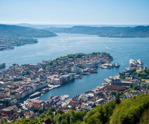

Bergen

Bergen a colorful Norwegian city is a gateway to majestic fjords. Bryggen Hanseatic Wharf will give you a sense of the local culture – take some time to snap photos of the Hanseatic commercial buildings, which look like scenery from a movie set. Don’t breathe too deeply when you visit the outdoor fish market, a reminder of the city’s role in early fish trade. Ferry across a fjord to Lysøen, where the former villa of 19th-century composer Ole Bull will captivate you with fairytale charm.
Troldhaugen and the Edvard Greig Museum
Troldhaugen was the home of Nina and Edvard Grieg, where the couple lived there for the last 22 summeres of Greig's life.
Troldhaugen became a museum in 1928 and includes Grieg’s Villa, the composer’s
hut and the Grieg couple’s gravesite as well as a modern museum building and the concert hall
Troldsalen, a chamber music hall seating 200 people. Troldsalen is the centre of the museum’s
extensive concert activities and has excellent acoustics.
Mt.Floyen and the funicular
The journey is an experience in itself, and at the top you can enjoy fantastic views over
Bergen. Check out the view right now from our webcam of Bergen seen from Fløyen.
There are endless opportunities for walks on Fløyen, and you will also find a cafe,
restaurant and children’s playground. The funicular runs daily all year round from
early morning to late evening
Bryggen - the Hanseatic wharf
Bergen's first buildings were erected along the old, Hanseatic wharf, Bryggen,
which has been a lively and important part of the city through the centuries.
This site, which features on UNESCO’s World Heritage List, comprises the remains
of the old harbour buildings and is one of the best known medieval city settlements in Norway.
The Hanseatic merchants dominated Bryggen for 400 years. The area has been ravaged
by fire repeatedly. Walking through the narrow alleyways and dark external galleries is like
travelling back in time. At Bryggen the Hanseatic Museum and Schøtstuene, the Hanseatic assembly rooms,
give an intimate picture of the life of a Hanseatic merchant.
The Bryggens Museum
Out of the dust and ashes
Bryggen, the old wharf in Bergen, is an exceptional example of a medieval district,
and it has been designated a World Heritage site by UNESCO. In 1955 parts of Bryggen
were ravaged by a fire, and during the subsequent excavations a huge number of objects
were found that provide a vivid insight into commerce, shipping, handicrafts and everyday
life in medieval times.
Experience the Best of Bergen
Bergen City Pass The practical and reasonable way to explore Bergen, the City of Culture. With the Bergen Card in your pocket, you travel free on Light Rail and buses in the city and the Region. You get free or discounted admission to museums and attractions, as well as many cultural events, various sightseeing tours, restaurants and parking.
Tours and Excursions
City Tours
We wander through Bergens's past, spanning 900 years of history - from Bryggens Museum, through the ancient wooden buildings and alleyways, to the Hanseatic Museum. The walking tour gives an intimate picture of what it was like to live in the town during the Middle Ages, when the Hanseatic League had one of their four major overseas offices here in Bergen. These buildings are now on UNESCO's World Heritage List.
The Theta Museum Tour is the secret room of the Theta Group of the Resistance Movement during the occupation of Norway from 1940 to 1945. Their aim was to establish communication with the resistance and the Norwegian government in exile. Theta group was established in May 1940. Its aim was to establish radio contact between Norway and England. The headquarters was in a small room at Bryggen.